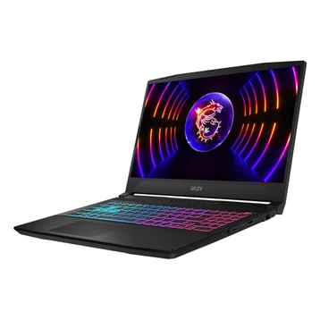
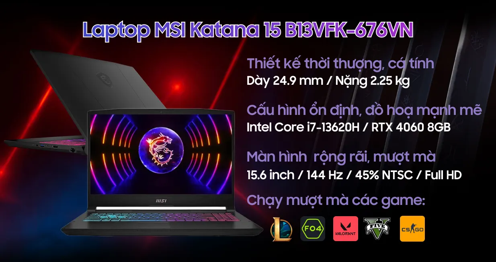

1. Giới thiệu về MSI Katana 15 B13V
MSI Katana 15 B13V là một mẫu laptop gaming thuộc dòng Katana của MSI. Laptop được trang bị bộ vi xử lý Intel Core thế hệ 13 cùng card đồ họa NVIDIA GeForce RTX, mang lại hiệu năng phù hợp cho chơi game và các công việc yêu cầu khả năng xử lý đồ họa.
Ngoài chơi game, MSI Katana 15 B13V cũng có thể được sử dụng cho học tập và các công việc liên quan đến kỹ thuật như Công nghệ thông tin, Điện tử viễn thông, Cơ điện tử,...

Hình ảnh laptop MSI Katana 15 B13V
2. Đặc điểm nổi bật
Một số đặc điểm nổi bật của MSI Katana 15 B13V
- Sử hữu bộ vi xử lý Intel Core I7 thế hệ thứ 13 cung cấp hiệu năng tốt cho nhiều tác vụ
- Được trang bị Card đồ họa Nvidia GeForce RTX 4060 8GB VRam phù hợp cả về chơi game và xử lý đồ họa
- Màn hình tích hợp có kích thước 15.6 inch, tần số quét 144hz, phù hợp cho chơi game, học tập và làm việc
- RAM 16GB DDR5 phù hợp cho việc xử lý nhiều tác vụ cùng lúc
- Hệ thống tản nhiệt vô cùng mát mẻ phục vụ cho việc sử dụng trong thời gian dài

Đây là sơ lược về cấu hình của máy
3. Thông tin chi tiết
| Thành phần | Thông tin | Mục đích sử dụng |
|---|---|---|
| CPU | Intel Core I7-13620H | Xử lý các tác vụ và chương trình |
| GPU | NVIDIA GeForce RTX 4060 8GB Vram GDDR6 | Chơi game và xử lý đồ họa |
| Màn hình | 15.6 inch, tần số quét 144Hz | Học tập, làm việc và giải trí |
| RAM | 16GB DDR5 5200MT/s | Chạy nhiều ứng dụng cùng lúc |
| Lưu trữ | SSD NVMe 1TB | Lưu trữ dữ liệu và tăng tốc độ khởi động |
4. Ưu điểm
- Hiệu năng tốt trong tầm giá đối với nhu cầu chơi game và học tập.
- Card đồ họa RTX giúp laptop có khả năng xử lý các ứng dụng và trò chơi yêu cầu đồ họa.
- Có khả năng nâng cấp RAM và SSD trên nhiều phiên bản.
- Màn hình kích thước lớn phù hợp cho học tập, lập trình và giải trí.
- Có nhiều cổng kết nối cho các thiết bị ngoại vi.
5. Hạn chế
- Laptop có kích thước và trọng lượng tương đối lớn so với nhiều laptop văn phòng.
- Khi chơi game hoặc chạy các tác vụ nặng, hệ thống tản nhiệt có thể tạo ra tiếng quạt lớn.
- Thời lượng sử dụng pin không phải là điểm mạnh khi thực hiện các tác vụ nặng.
6. Liên kết tham khảo
Trang chủ MSI: https://www.msi.com/
Trang sản phẩm MSI Katana: MSI Katana 15 B13V
Trang NVIDIA: https://www.nvidia.com/